广东的美食文化丰富多样，以粤菜为代表（因为广东还有其他非广府人群，比如客家人，黑人）。
而且广东饮食确实偏清淡（特别是亲身来到济南生活过后）
具体介绍下肠粉？滑嫩爽口（学弟喜欢蛋肠），
而且不噎人（此处已打败大部分面食），而且顶饱（NICE）
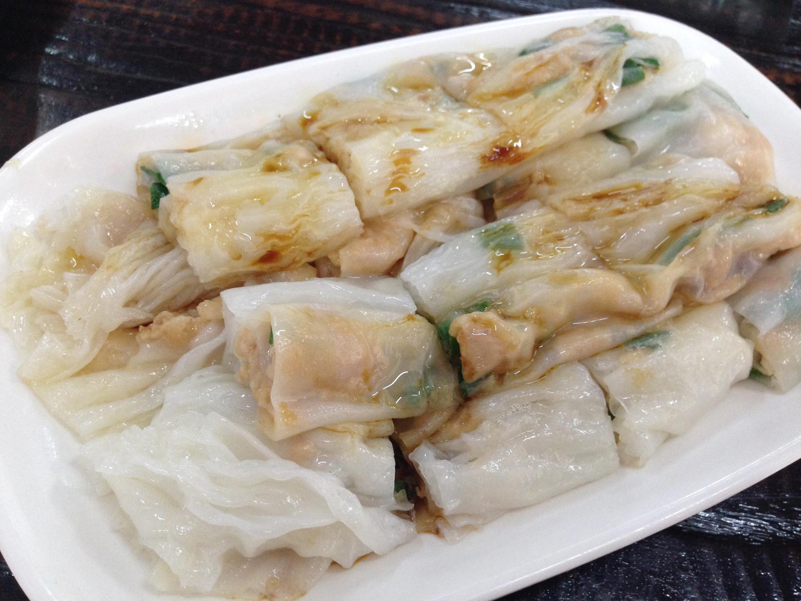
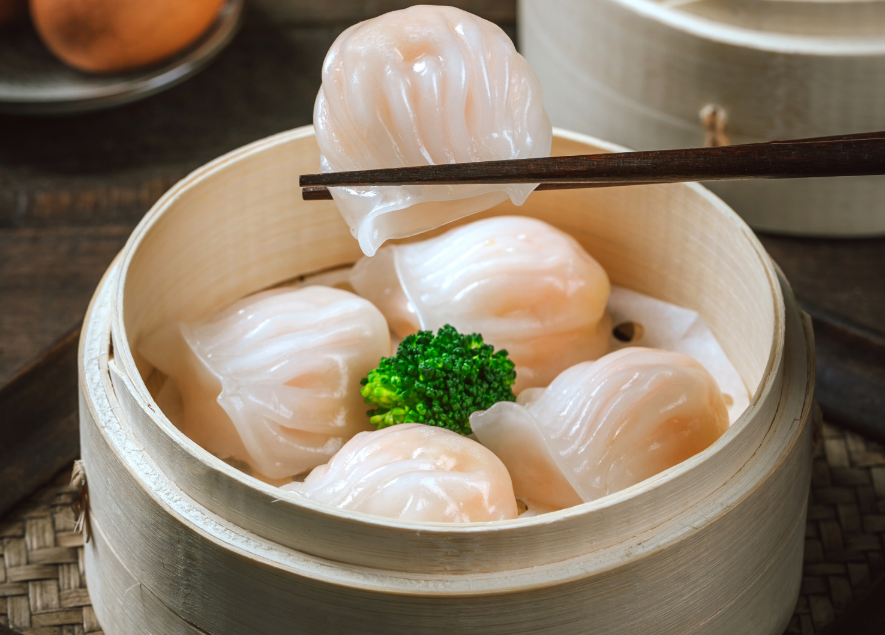
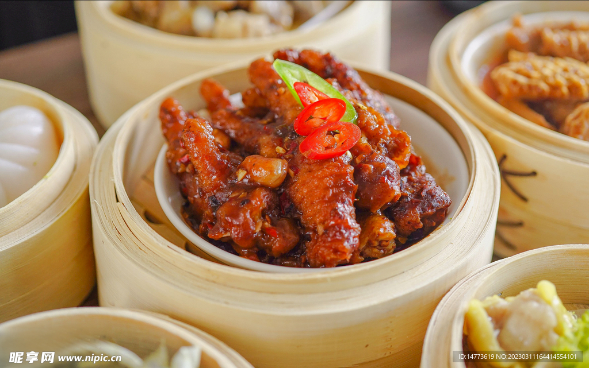
可能习俗不同，我们这边一般不直接把卤味叫做烧腊
烧腊基本是甜口的，而且讲究脆皮
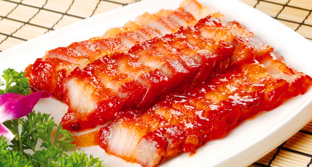
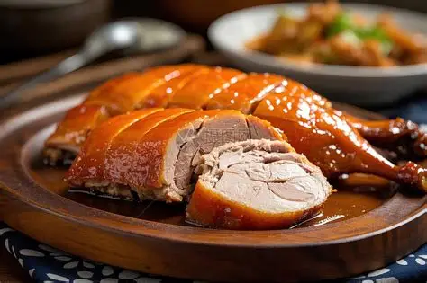
众所周知，广东人对鸡的要求是很高的：不能是饲料鸡，只要是养殖场的基本都会被广东人FOU掉
最爱的当然就是走地鸡（字面意思，放到森林里散养到处跑的鸡，吃虫子不吃饲料），
常见的做法就是桑拿鸡（放极少调料蒸鸡），吃他的肉质鲜美，爽滑弹口（NICE）
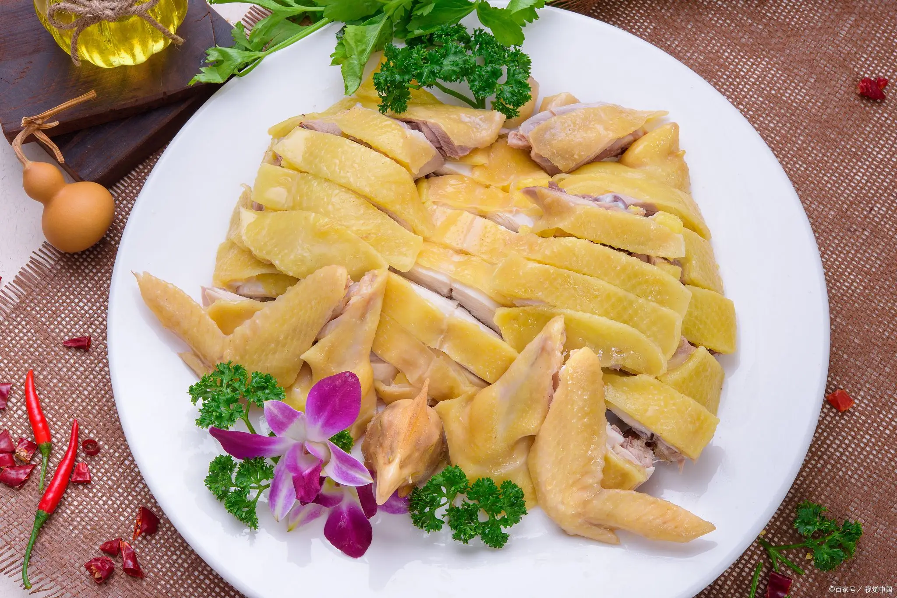
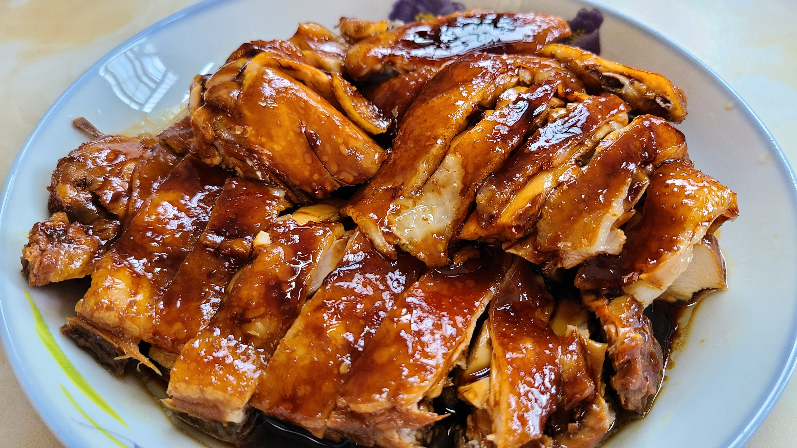
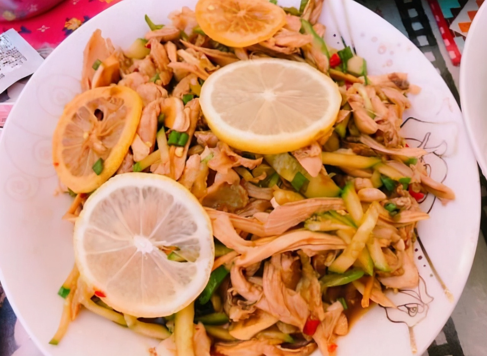
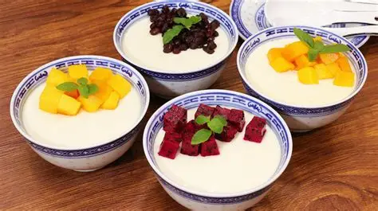
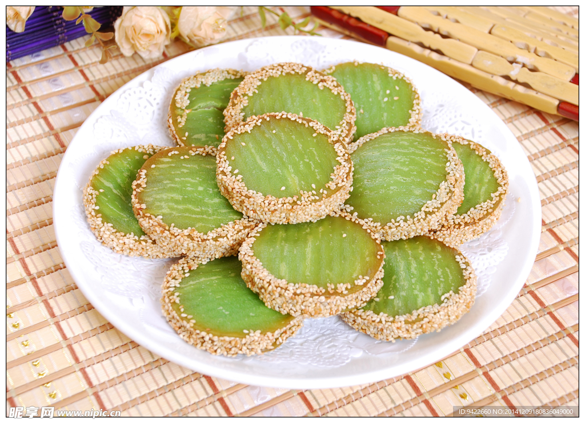
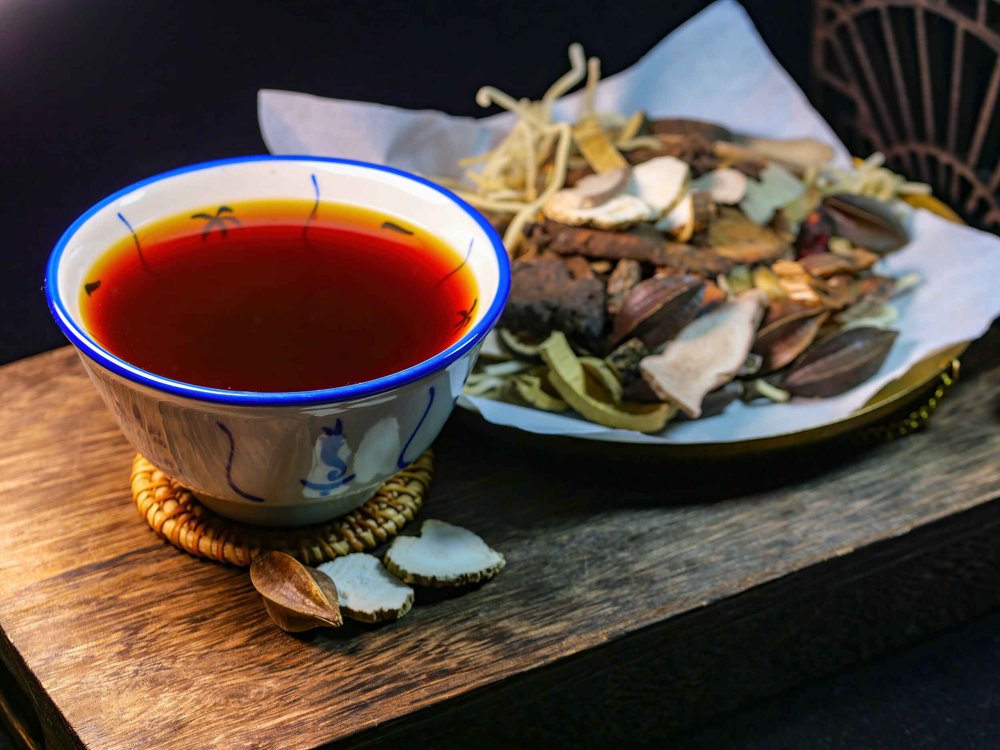